この度はキーボード自作キットをご購入いただきありがとうございます。
組み立て前に本ビルドガイドをよく読んでいただきますよう、よろしくお願いします。
Step0 内容物の確認
はじめに下記リストの部品が不足なく入っているか確認をお願いします。不足している場合は製作者までご連絡をお願いします。
| 品目 | 仕様 | 個数 |
| 実装基板 | オリジナル | 1p |
| マイコン基板 | Pro Micro互換 | 1p |
| リセットスイッチ | 小型スイッチ | 1p |
| ダイオード | 1N4148 | 11p |
| キースイッチ | Gateron 白軸 | 11p |
| キーキャップ | PBT素材 白/黒 | 計11p |
| 滑り止め | ｼﾘｺｰﾝｺﾞﾑ黒色 | 4p |
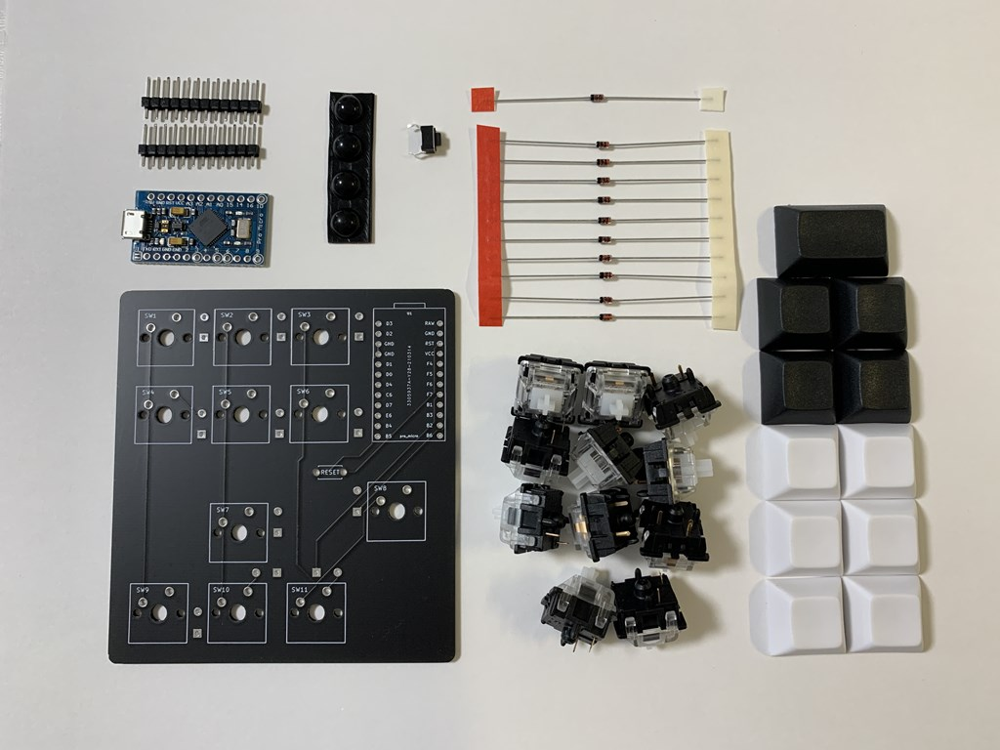
Step1 Pro Micro基板のもげ対策
一般的に言われるUSBコネクタのもげ対策を推奨します。
100円ショップで売られている2液混合タイプのエポキシ接着剤でをコネクタ周辺に盛って硬化するまで待ちましょう。
チップ抵抗やチップコンデンサ等の部品を覆っても大丈夫ですが、USBコネクタ内部に侵入したり、電極に被さったりしないように注意してください。
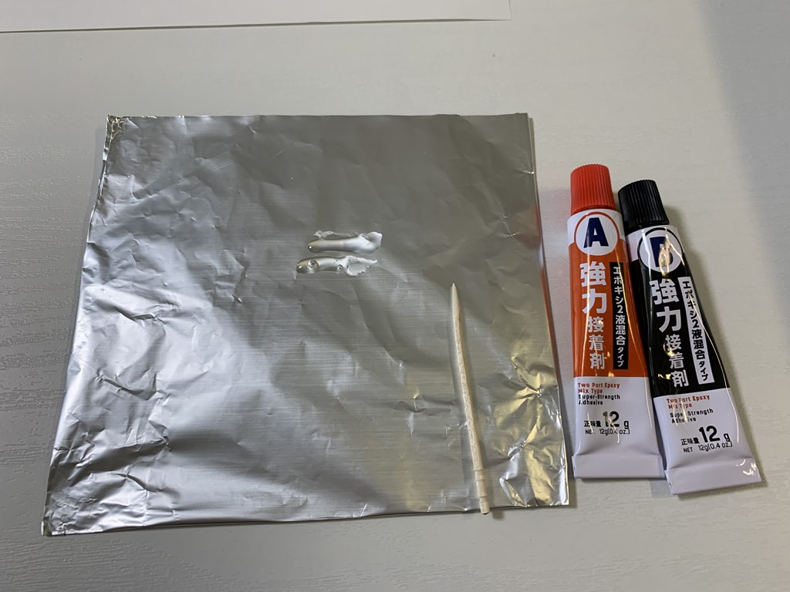 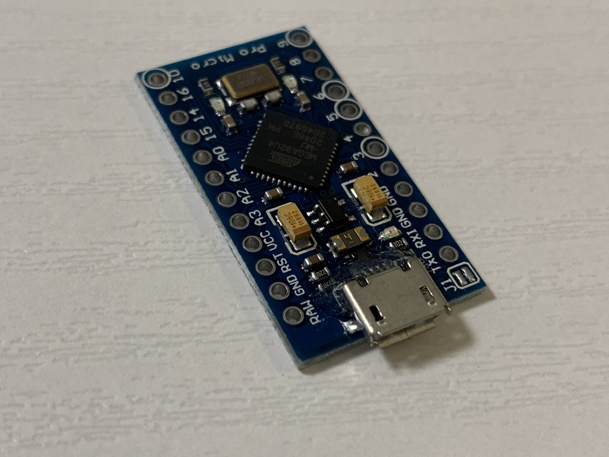 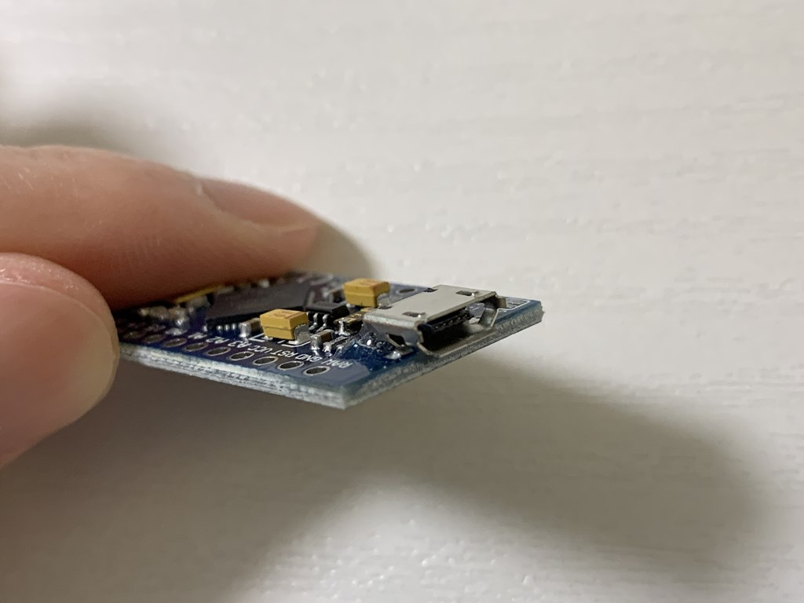
Step2 Pro Microプログラム書き込み
接着剤の硬化が表面が固まるぐらいまで進んだら、Pro Microに制御ソフトを書き込んで動作テストをします。
Pro Microを一度実装基板に半田付けすると取り外しが大変になるため、ここでPro Microに初期不良がないことを確認して安心しておきましょう。
QMK Toolboxをインストールするか、Chromeブラウザ上で行う２パターンがあるのですが、今回はよりシンプルな後者の方法を解説します。
① 本自作キット向けの制御ソフト(hexファイル)を下記URLからダウンロードして一度ローカルの任意のディレクトリに保存する。
ファームウェア(hex)
② のぎすけ屋さんが作製されたChrome上書き込みツールのサイト https://sekigon-gonnoc.github.io/promicro-web-updater/index.html にアクセスする。
③ファイルを選択からダウンロード済みのhexファイルを指定して、「flash」ボタンを押す。
④Pro MicroのRSTとGNDをピンセットでショートさせることで、内部ソフトの書き換え可能なモードにする。
手頃な金属がなければ、ダイオードの足を2cm程カットして曲げても良いし、アルミホイルをちぎってもOK
⑤ シリアルポートへの接続要求画面に、④の操作によって現れるデバイスを選択して接続ボタンを押す
⑥ しばらく待ってVerify OKと表示されたら完了
初期設定ではキー機能に0～9の数字を割り振っています。画像のようにピンをショートさせてみて、メモ帳などに数字が入力されれば無事にPro Microに制御ソフトの書き込み成功が確認できます。
Step3 ダイオードの実装
実装基板の11箇所(D1~D11の印刷)にダイオードを半田付けします。
基板の裏面にダイオードを取り付けますので、他の部品と違う面に印刷が入っています。
ダイオードの黒帯が印刷の白ラインと同じ向きになるように取り付けてください。
リセットスイッチも半田付けしてください。
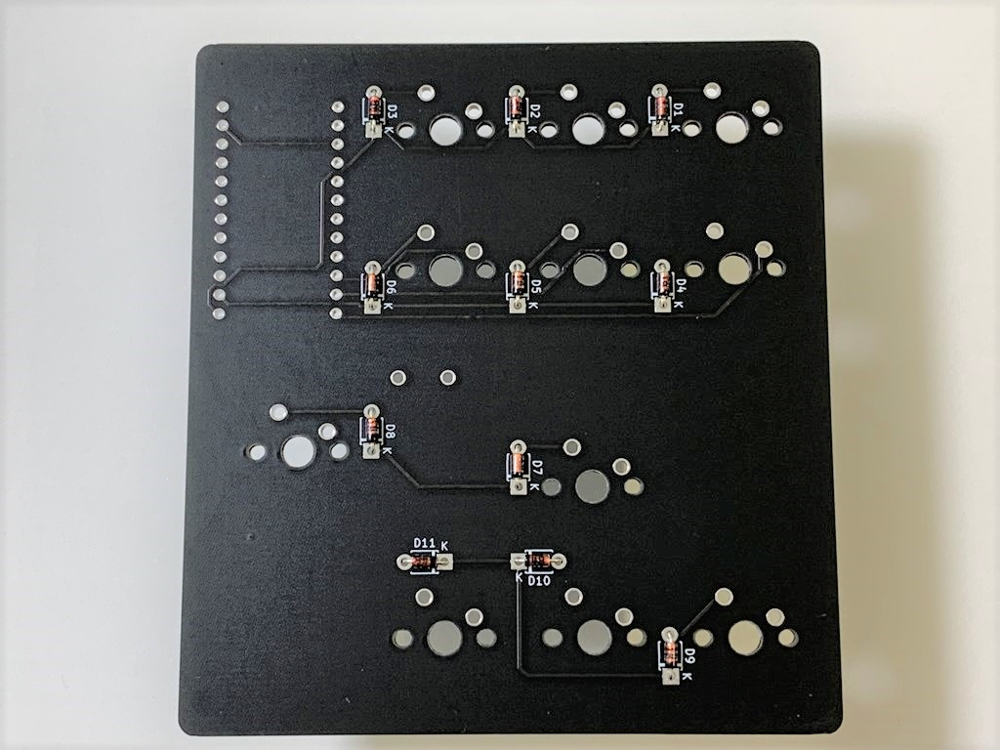 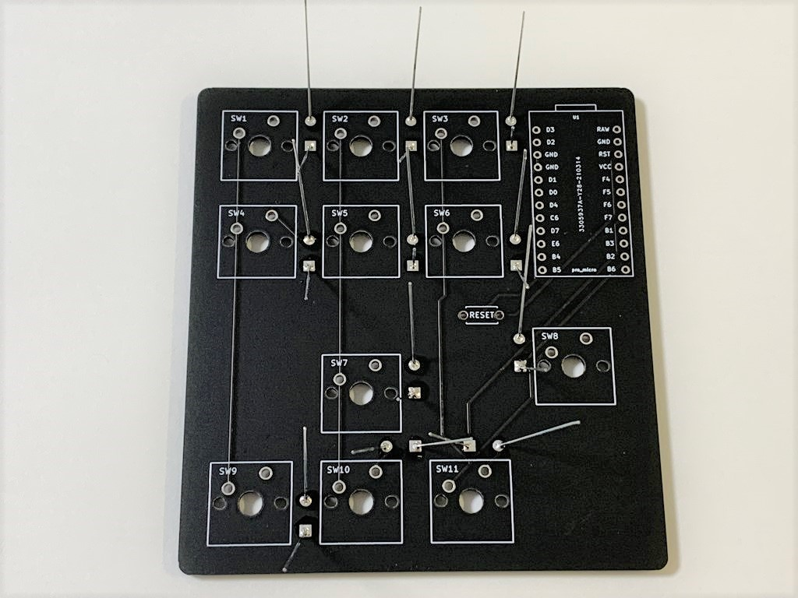
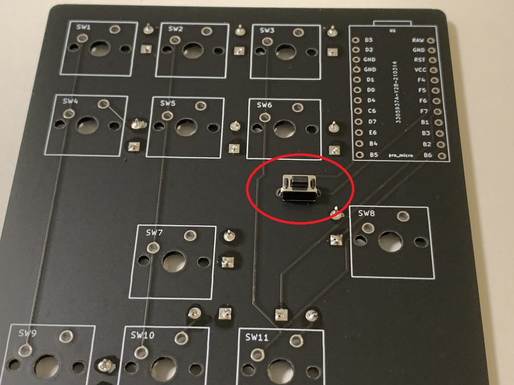 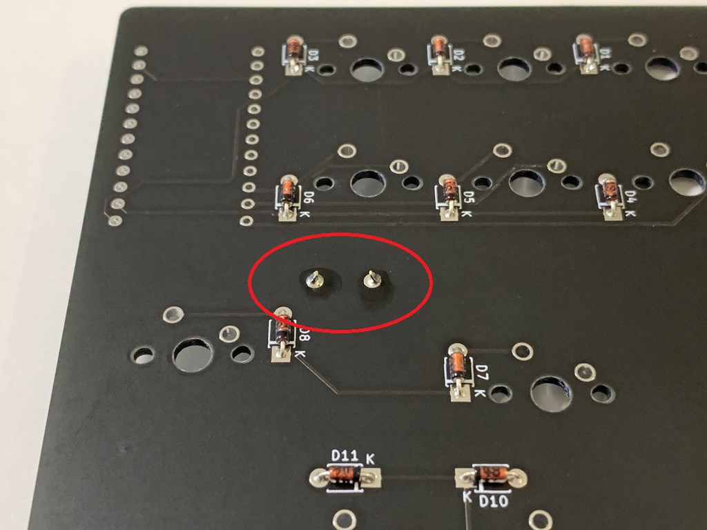
Step4 Pro Micro基板の実装
ピンヘッダ―を介してPro Micro基板を実装基板上に取り付けます。
①ピンヘッダ―の脚が短い方を実装基板の表面から押し込んで裏面側から半田付けします。
②ピンヘッダ―の上にPro Micro基板を載せて上側から全てのピンを半田付けします。
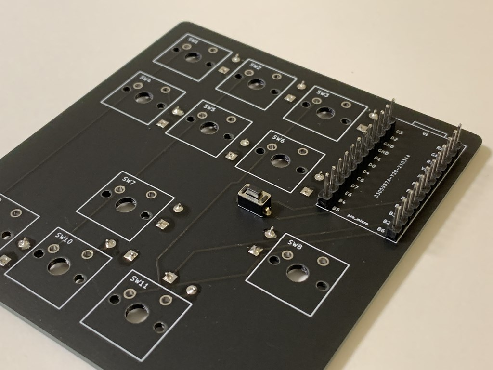 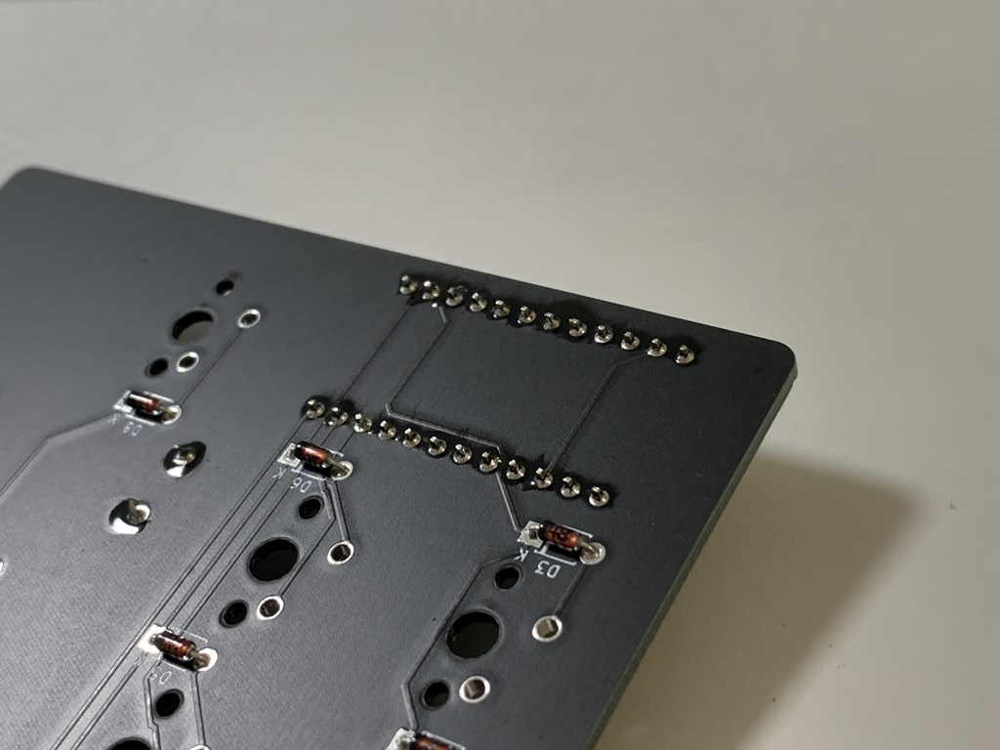 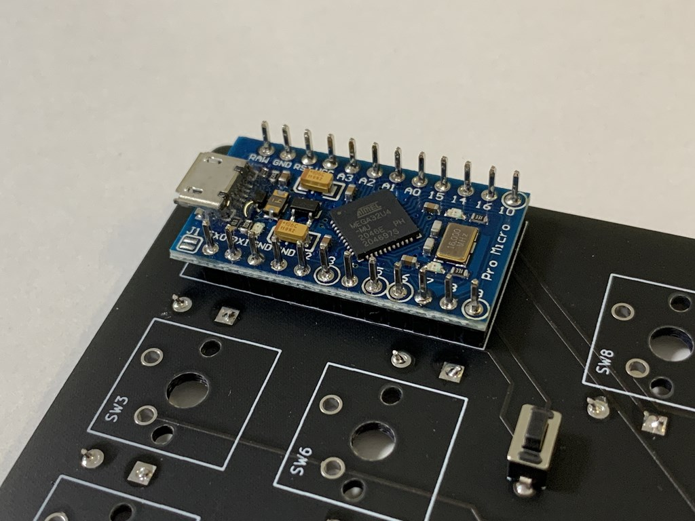
Step5 キースイッチの実装
キースイッチ11個全てを実装基板のS1~S11に押し込みます。まだ半田付けはしないでください。
電極脚2本が基板に刺さる向きに合わせてください。もし電極脚が折れてしまったら、曲げ直して基板に刺さるように修正してください。
半田付けをしない状態でキースイッチにキーキャップを押し込んでください。奥まで入るようにしっかりと力をかけてください。
白黒とのキーキャップが合計11p同梱されていますので、お好みの位置に取り付けてください。
キースイッチがしっかりと実装基板の奥まで入っていて斜めになっていないことを確認して、裏面から半田付けしてください。
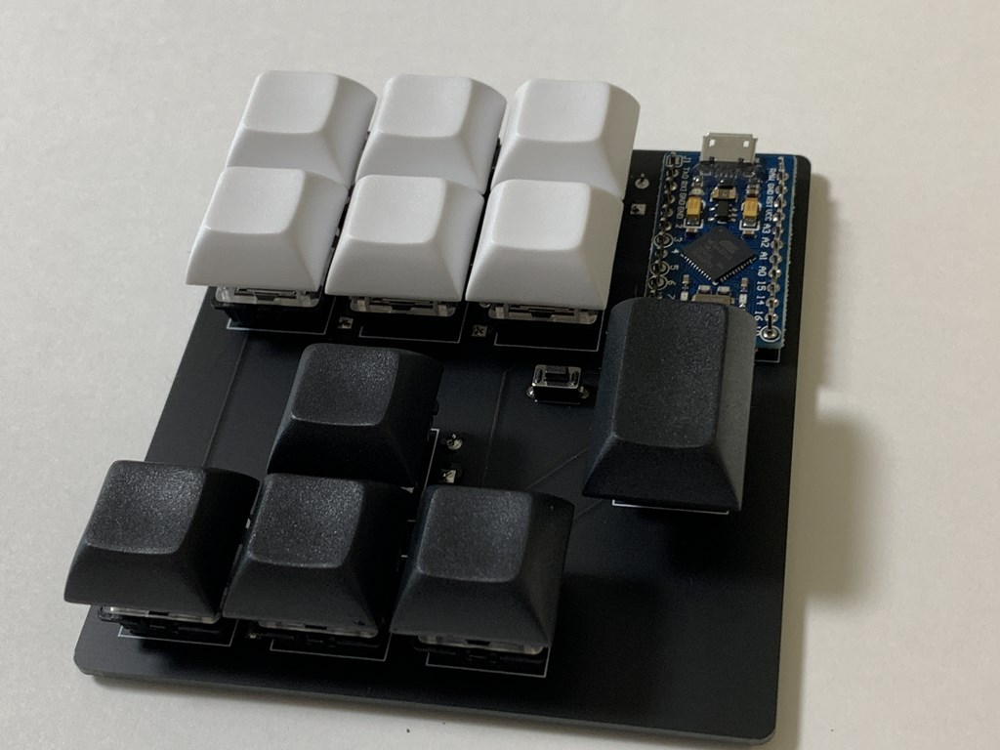 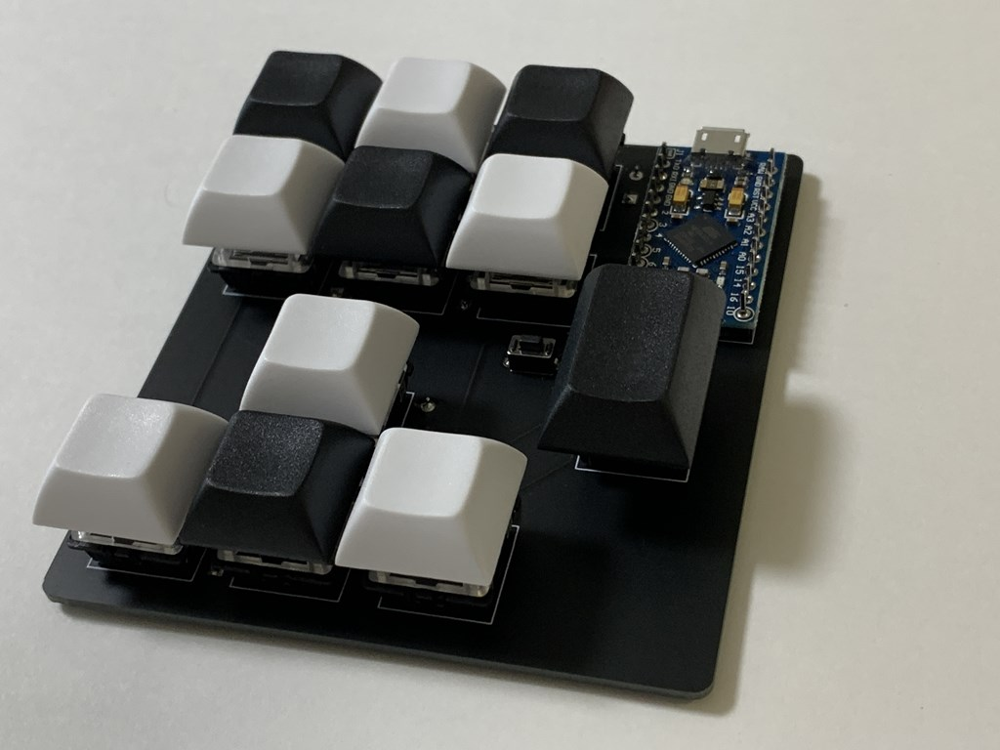
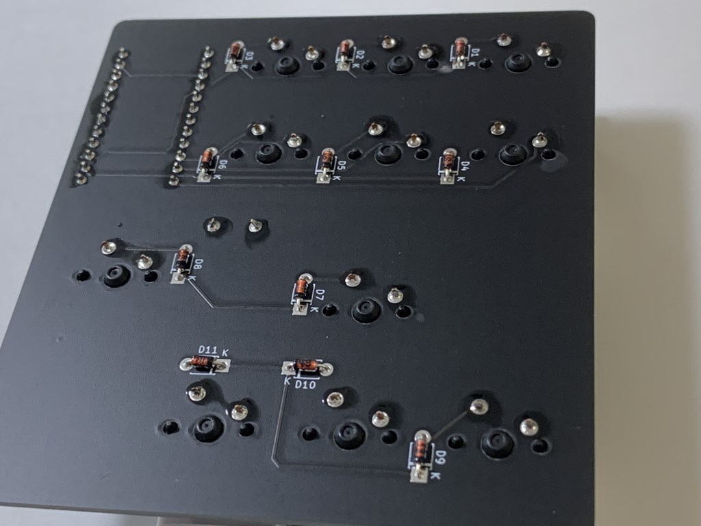
Step6 キー機能のカスタマイズ
裏面に滑り止めのシリコーンゴムを貼付けて本体の完成です。PCに接続して全てのキーが反応する(数字が入力される)ことを確認しておきましょう。
問題がなけれキー機能のカスタマイズに進みましょう。
① 下記リンクからキー設定ファイル(jsonファイル)をダウンロードしてローカルに保存する
キー配置設定ファイル(json)
② Chromeブラウザから https://remap-keys.app/ にアクセスする
③ 青色のSTART REMAP FOR YOUR KEYBOARDボタンを押す ④ +キーボードをクリックして、HIDの接続を許可する
⑤ jsonファイルをドラッグして読み込ませる
⑥ 画面下部から好きな機能をドラッグし、上部の画像の配置先キー上でドロップ。
⑦ 満足いくキー設定ができたらFlashボタンを押す
これでキー機能のカスタマイズは完了です。